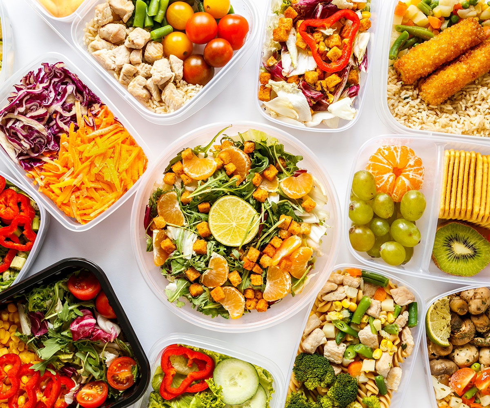

Morda a Borda
Não há limites para uma alimentação saudável.
Início •
Regiões •
Sobre Nós •
Referências

O que é ter uma alimentação saudável?
É ter uma alimentação baseada em práticas alimentares que assumam a
significação social
e cultural dos alimentos como fundamento básico
conceitual.
Neste sentido é fundamental resgatar estas práticas
bem como estimular a produção
e o consumo de alimentos saudáveis
regionais (como legumes, verduras e frutas.),
sempre levando em
consideração os aspectos comportamentais e afetivos relacionados às
práticas alimentares.
Qual a Importância de uma Alimentação Saudável?
Uma alimentação saudável ajuda a
proteger contra a má nutrição em todas
as suas formas,
bem como contra as doenças crônicas não
transmissíveis (DCNT),
entre elas diabetes, doenças cardiovasculares,
AVC e câncer.
A alimentação não saudável e a falta de atividade física são os
principais riscos globais para a saúde.
Ter uma alimentação saudável é
essencial para manter o bom funcionamento
do nosso organismo.
Para conseguir isso, é importante consumir uma
variedade de alimentos nas proporções certas.
No Brasil, temos uma
rica cultura culinária que pode nos ajudar a alcançar
uma alimentação
balanceada. Ao incorporar esses pratos regionais em nossa alimentação,
podemos ter uma alimentação diversificada e saudável que representa a
riqueza cultural do Brasil.
© Airton Mesquita, Técnico em Nutrição e Dietética, 2023; IV FCAC
(Feira de Ciências, Arte e Cultura); EEEP Leonel de Moura Brizola.